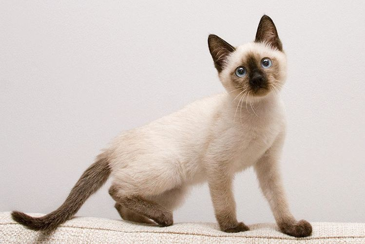

Сіамська кішка
Сіамська — порода кішок, що не одне століття жили при палацах і храмах у Сіамі (Таїланді), поки король не подарував пару сіамських кішок британському консулові.
Історія
Кішки потрапили спочатку до Великої Британії, а потім до США. Спочатку сіамські кішки мали вигляд, близький до сучасних тайських. У 1901 році був організований британський «Клуб сіамських кішок», а в 1902 році затверджений стандарт. У результаті селекційної роботи тварини набули сучасного вигляду. Стандарти сіамських кішок визнані практично всіма фелінологічними організаціями. Ці кішки є однією з найпопулярніших порід у світі. На виставках завжди можна побачити велику кількість сіамів.
Характер
Характер кішок незвичайний. Це дуже енергійні, рухливі, кмітливі, спритні й швидкі істоти. Складається враження, що вони невтомні. Їхній допитливості немає меж. Дуже «говіркі». Мають специфічний голос. Вони ніжні й ласкаві. Одночасно сіами вимогливі, наполегливі й часом нав'язливі.
Зовнішній вигляд
Кішки сіамської породи — це елегантні, стрункі тварини середньої величини. Тіло довге, у формі труби, з досить міцним кістяком, добре розвиненою мускулатурою. Плечі й стегна сильні. Кінцівки довгі й стрункі. Лапи акуратні, маленькі, овальної форми. Задні кінцівки трохи довші, ніж передні. Хвіст довгий, тонкий, рівномірно звужений до кінчика, без зламів. Кінчик хвоста загострений. Коти трохи більші, ніж кішки. Голова середньої величини стосовно тіла, має форму довгого вузького клина із широким сплощеним простором між вухами. Бічні лінії клина прямі, без зламу на рівні подушечок вібрис. Вуха ніби продовжують лінії голови таким чином, що кінчик носа й кінчики вух утворюють вершини рівностороннього трикутника. Вилиці високі, плоскі. Пряма лінія, що утворює верхню частину профілю, іде від верху голови до кінчика носа, без перелому на рівні очей і без заглиблення на переході від чола до носа. Ніс довгий, прямий. У дорослих котів можуть позначатися щоки. Лінія від кінчика носа до підборіддя вертикальна. Підборіддя розвинене, але не повинне бути надто масивним і випуклим. Вуха великі, широкі в основі, з трохи загостреними кінчиками, продовжують лінії клина голови. Очі середньої величини, мигдалевидної форми, поставлені косо, у гармонійному поєднанні з лініями клина. Відстань між очима не менша величини одного ока. Колір від темно-синього до яскраво-блакитного. Перевага надається насиченим тонам. Косоокість не допускається. Шия струнка, довга. Хутро коротке, блискуче, ніжне, тонке, прилягає до тіла.